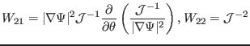

Next: Numerical methods for finding Up: Discrete form of elements Previous: Discrete form of elements
In the GTAW code, the weight functions appearing in the Fourier integration are numbered as follows:
| (200) |
| (201) |
| (203) |
| (204) |
| (205) |
| (206) |
| (207) |
| (208) |
| (209) |
|  | (210) |
 |
(211) |